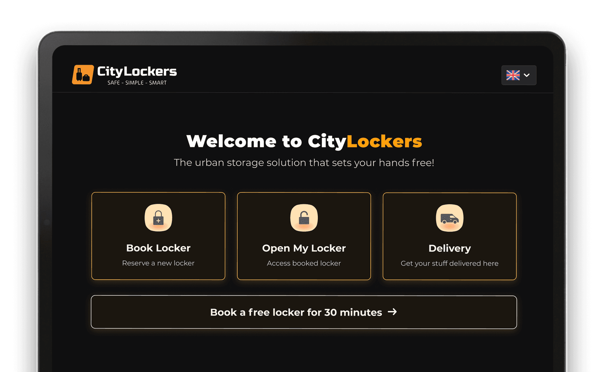
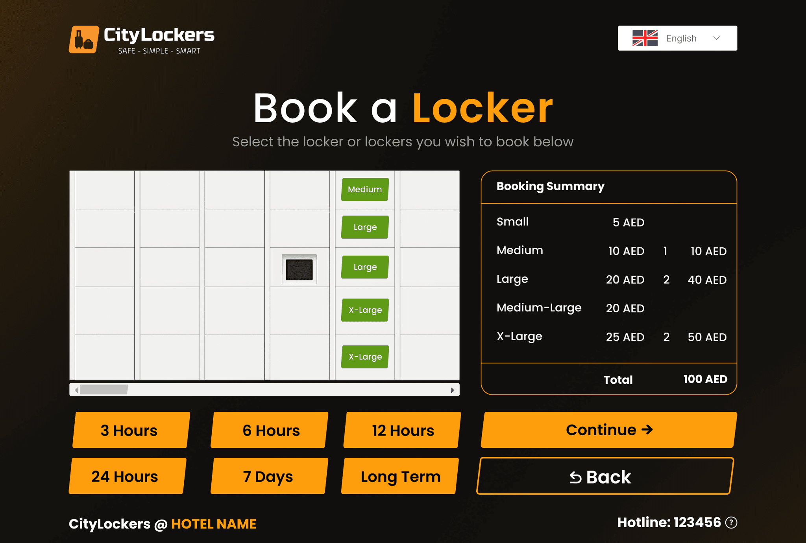
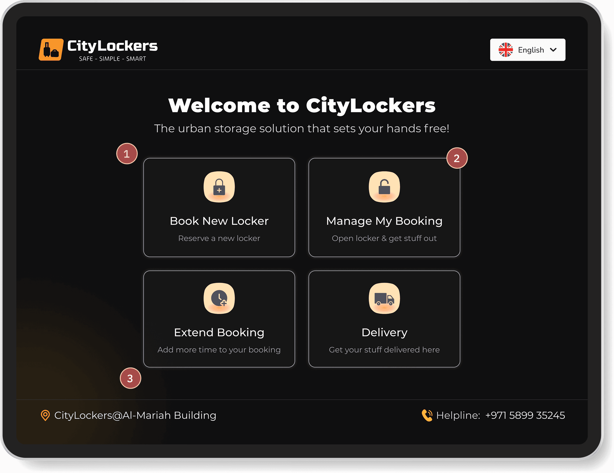
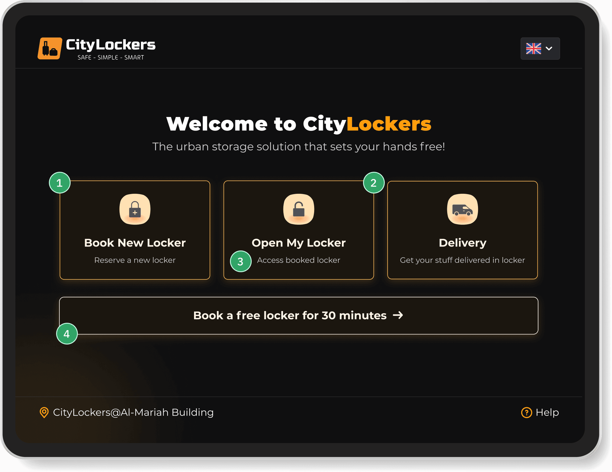
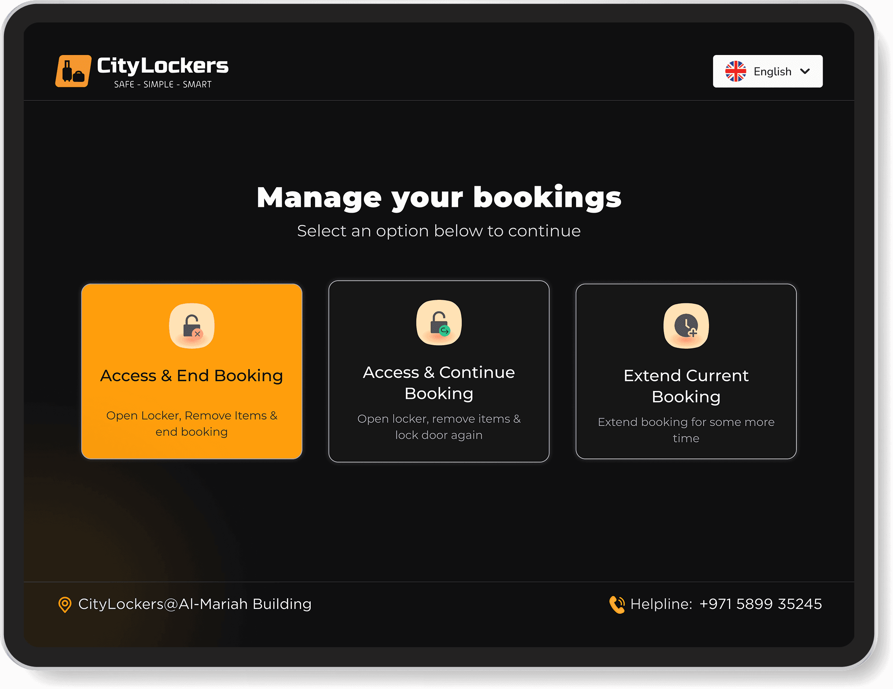
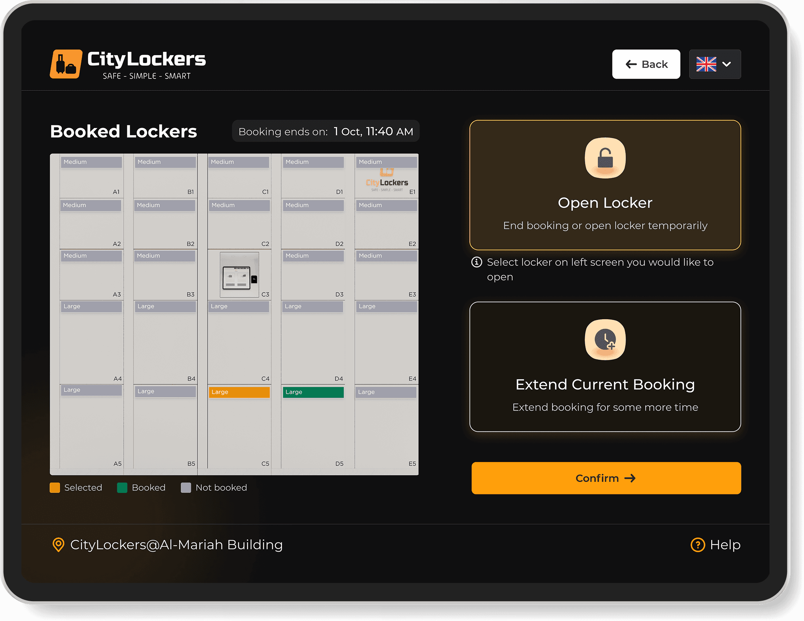
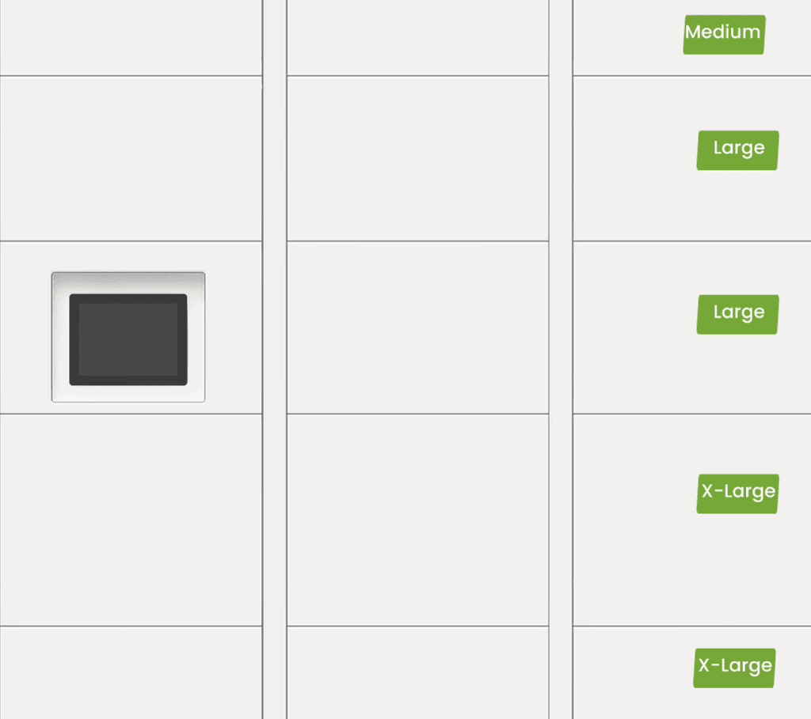
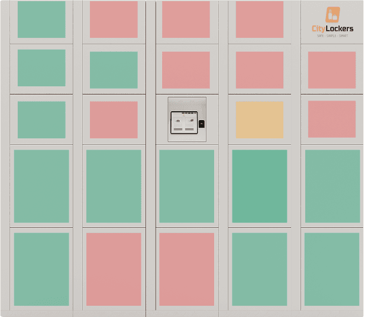
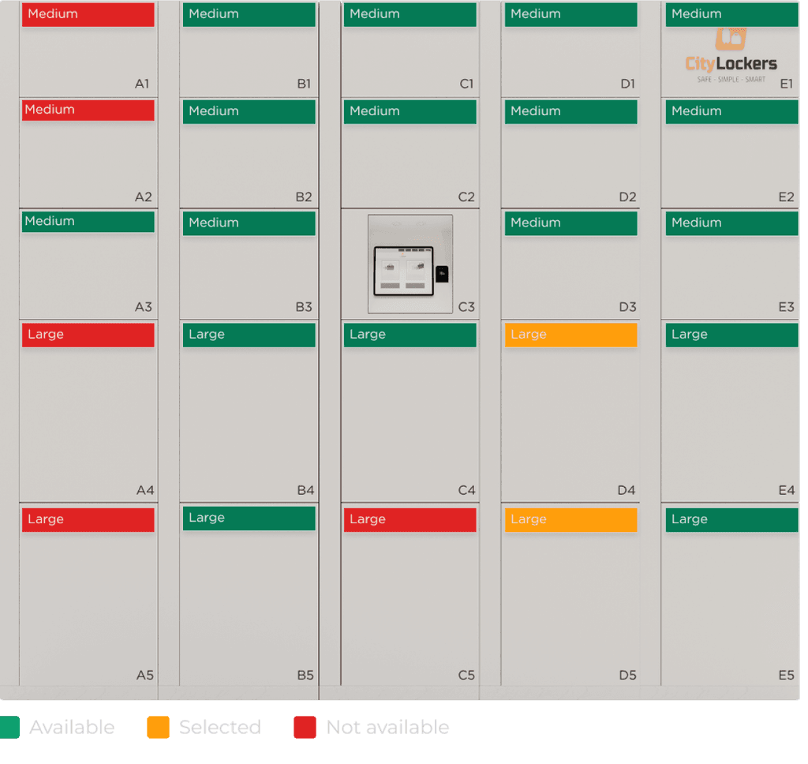
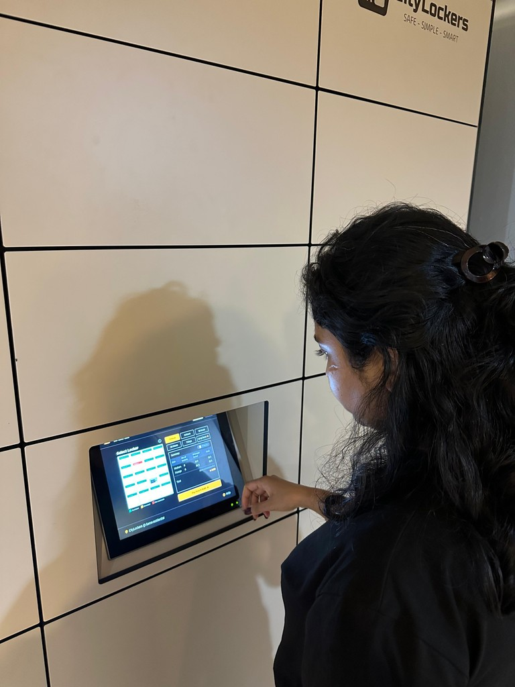

CITYLOCKERS KIOSK EXPERIENCE
Helping travellers go hands-free in under 4 minutes, 2,000+ bookings completed across Dubai.

THE CONTEXT
CityLockers gives travellers a safe place to drop their bags and help them keep moving!
CityLockers is an early-stage Dubai startup building smart locker infrastructure across malls, hotels, beaches, and residential buildings. I was brought in to redesign the kiosk experience, rethinking the flows, rebuilding the interface, and designing every edge case from the ground up.
TEAM
Product designer (Me)
4 Frontend & backend developers
Founder & Investor
LOCATION
UAE
PLATFORM
Touch Kiosk
THE IMPACT
Used by
2000+Real users tested: prototype and post-deployment
10Average booking time
< 4 MinsTHE PROBLEM
Luggage holds
travellers back.
UAE welcomes over 20 million tourists annually. The gap between hotel checkout and departure sometimes 6 to 8 hours forces travellers to drag luggage through malls, beaches, and tourist spots. No direct competitor solves this in Dubai with a dedicated locker network.
The checkout gap
Hotels check you out at 12pm. Your flight is at 10pm. That's 10 hours with nowhere to leave your bags.
Luggage kills the experience
Travellers skip attractions or pay for hotel storage just to move freely for a few hours.
No dedicated solution in Dubai
Bounce and LuggageHero use grocery stores. CityLockers offers proper dedicated lockers, a different level of trust.
Tourists visit UAE annually,
most experiencing the checkout-to-departure luggage problem firsthand.
WHAT THEY HAD WHEN I JOINED
The previous design
Before I could design anything new, I had to understand exactly what was broken and why rebuilding from scratch was the right call.

No locker door IDs
- No A1, B2 labels so users had no way to confirm which locker they selected.
Horizontal scroll on the locker grid
- Some lockers weren't visible without scrolling.
- On a touch kiosk, most users never find them.
Action buttons share same visual weight
- Continue and Back looked identical so no clear primary action.
No colour coding on the locker grid
- Every door looked the same. Available, taken, selected which was impossible to tell apart.
No visual hierarchy or clear entry point
- Every element competed equally. A first-time user had no obvious next step.
Missing information
- Selected duration is missing from the booking summary.
- Cant find which duration option is selected too.
THE RESEARCH
I studied what already works &
what breaks.
I used real lockers, studied competitors end-to-end, and talked to frequent travellers in my network.
Who I was designing for
Emma Richardson
Marketing Manager · Visiting from London
First-time tourist in Dubai on a 5-day solo trip. She has a gap between hotel checkout and check-in with luggage to manage. She wants to explore freely without carrying bags in the hand.
Ahmed Hassan
Software Developer · JBR, Dubai
Egyptian expat in a high-security residential tower where delivery personnel aren't permitted beyond the lobby. Works from home but misses 60% of deliveries because security won't allow couriers upstairs.
Competitive & observational analysis
Bounce & LuggageHero
- Used both end-to-end to understand existing booking flows.
- They work through third-party shops, different trust model, different safety level. Same core problem, different solution.
Train station lockers, used in person
- Used lockers at Budapest Keleti and Prague main station to study what works.
- No size guide were available on the doors.
Noon Lockers, Dubai
- Studied for hardware interaction patterns how users approach a physical locker unit and how the screen relates to the doors.
Frequent travellers in my network
- Talked to friends who travel often.
- They brought up locker experiences in Paris and Spain confirming the checkout gap is a real recurring frustration, not a niche edge case.
What the research changed?
Label every door
- Added Medium / Large size labels on every door in kiosk grid so no instructions needed.
Let users pick their locker
- No competitor does this. Auto-assignment ignores that travellers with large bags need large lockers, or may want adjacent doors for multiple bags.
Keep it simple above all
- The best lockers I used in Europe were obvious. That became the bar.
- If a first-time user can't figure it out in under 30 seconds, it's not done.
Boring part is over! 😮💨
KEY DECISIONS
With the research done, I rebuilt all screens.
Three decisions defined the experience.
DECISION 1
Consolidate the home screen options
- 1
4 options in a 2×2 grid → cognitive load, unclear priority
- 2
"Manage My Booking" and "Extend Booking" are the same user journey split into two options unnecessarily.
- 3
No low-friction entry point for first-time users

What changed and why
- 1
3 options in a row → clear hierarchy, one decision
- 2
"Extend Booking" consolidated under "Open My Locker" → one entry point
- 3
"Open my locker" → clear, specific copy
- 4
"Book a free locker for 30 minutes" → a business decision which drives conversion

DECISION 2
The manage booking screen had three options.
I reduced it to two - clearer actions, fewer steps.

Before
- Opened to three choices -"Access & End Booking", "Access & Continue Booking", "Extend Booking"
- First two meant the same thing, users had to read carefully to spot the difference

After
- Opens directly to two clear actions, Open Locker or Extend Booking
- Confirmation dialogue inside the flow handles the end booking vs continue decision
- Extend Booking opens the same locker selection screen so no new patterns to learn.
DECISION 3
Let users pick their own locker.
Grid Evolution



- No competitor lets users pick their own locker, everyone auto-assigns based on size selection. I gave users a visual grid, colour-coded by availability, so they tap exactly the door they want.
- Auto-assignment can't account for a traveller with a large suitcase, or someone who needs two adjacent doors. The grid handles all of it without a single line of instruction copy.
WALKTHROUGH
Here's how kiosk works
A complete kiosk experience from first touch to locker open.
Booking locker flow
Manage booking flow
Before / After
Slide to see changes
Want to try Prototype?
Click here to check Figma Prototype!
MY LEARNINGS
What CityLockers Kiosk Project
Taught Me
Designing for a small screen kiosk is different
- This wasn't an app someone opens on their sofa. It's a kiosk in a metro station or mall while luggage in hand, somewhere to be.
- That context changed how I thought about every screen, how much text to add, how big the buttons should be, how many steps.
- Testing in the real environment taught me more than any prototype session.
- The colour-coded locker grid came as a savior. Nobody needs to read anything. That one decision made the screen work for everyone, regardless of language

What I'd do next with more time and data
- Run usability sessions at the physical kiosk testing 5 users, observing the manage booking flow specifically
- Add a remote end-booking option in the app as post-deployment testing showed users didn't always know they had to end at the kiosk
- Booking drop-off tracking to identify exactly where users abandon the flow
- Test Arabic RTL layout as it is functional but not fully optimised for RTL reading patterns